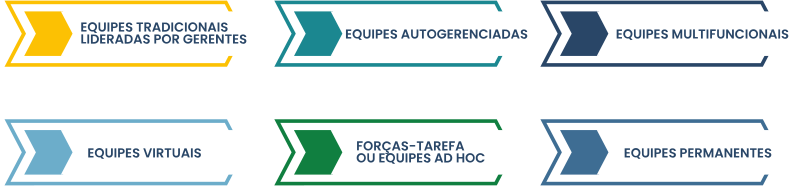

TÓPICO 3
DESENVOLVENDO O POTENCIAL DE LIDERANÇA
TÓPICO 3
DESENVOLVENDO O POTENCIAL DE LIDERANÇA
Conforme Quinn et al. (2015), existem alguns tipos de equipes.
Clique nelas para conhecer suas características.
EQUIPES TRADICIONAIS LIDERADAS POR GERENTES
Os integrantes da equipe possuem pouco ou nenhum envolvimento no processo decisório relacionado às metas da equipe, contudo podem participar das decisões que versam acerca da forma de execução do trabalho.
EQUIPES AUTOGERENCIADAS
Os integrantes da equipe realizam atividades tradicionalmente desempenhadas por supervisores ou gerentes, tais como: planejamento, programação e avaliação do desempenho.
EQUIPES MULTIFUNCIONAIS
São compostas por integrantes de diversas unidades de trabalho e suas atividades são realizadas de modo interfuncional.
EQUIPES VIRTUAIS
Os integrantes da equipe estão distantes e interagem por intermédio da tecnologia.
FORÇAS-TAREFA OU EQUIPES AD HOC
Os integrantes da equipe trabalham juntos em projetos ou atividades por tempo limitado.
EQUIPES PERMANENTES
Os integrantes da equipe trabalham juntos em atividades permanentes e constituem elemento formal do desenho organizacional.